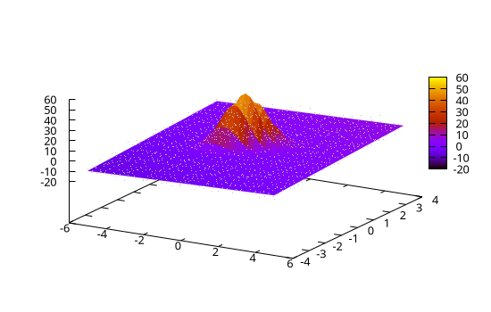
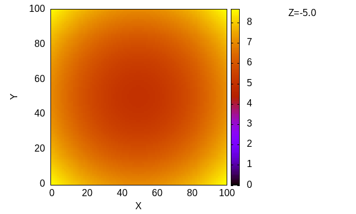

Multi-dimensional fitting
GModelFit.jl supports multi-dimensional data fitting, namely the case where both the model and the empirical measures are expressed as a function of an N-dimensional domain.
Example in 2D
using GModelFit
model = Model(:background => GModelFit.OffsetSlope(0, 0, 0., 0.5, 1.),
:psf => GModelFit.Gaussian(100., 0., 0., 1, 0.3, 15),
:main => SumReducer(:background, :psf))
dom = CartesianDomain(-5:0.25:5, -4:0.25:4)
data = GModelFit.mock(Measures, model, dom)
bestfit, fsumm = fit(model, data)(Components:
╭───────────────┬────────────────┬───────┬─────────────┬───────────┬───────────┬───────────┬─────────╮
│ Component │ Type │ #Free │ Eval. count │ Min │ Max │ Mean │ NaN/Inf │
├───────────────┼────────────────┼───────┼─────────────┼───────────┼───────────┼───────────┼─────────┤
│ main │ SumReducer │ │ 192 │ -6.416 │ 51.05 │ 1.294 │ 0 │
│ ├─╴background │ OffsetSlope_2D │ 3 │ 80 │ -6.416 │ 6.64 │ 0.1119 │ 0 │
│ └─╴psf │ Gaussian_2D │ 6 │ 132 │ 3.526e-61 │ 50.94 │ 1.182 │ 0 │
╰───────────────┴────────────────┴───────┴─────────────┴───────────┴───────────┴───────────┴─────────╯
Parameters:
╭────────────┬────────────────┬─────────┬──────────┬────────────┬───────────┬────────┬───────╮
│ Component │ Type │ Param. │ Range │ Value │ Uncert. │ Actual │ Patch │
├────────────┼────────────────┼─────────┼──────────┼────────────┼───────────┼────────┼───────┤
│ background │ OffsetSlope_2D │ offset │ -Inf:Inf │ 0.1119 │ 0.08314 │ │ │
│ │ │ x0 │ -Inf:Inf │ 0 │ (fixed) │ │ │
│ │ │ y0 │ -Inf:Inf │ 0 │ (fixed) │ │ │
│ │ │ slopeX │ -Inf:Inf │ 0.5029 │ 0.0269 │ │ │
│ │ │ slopeY │ -Inf:Inf │ 1.003 │ 0.03336 │ │ │
├────────────┼────────────────┼─────────┼──────────┼────────────┼───────────┼────────┼───────┤
│ psf │ Gaussian_2D │ norm │ 0:Inf │ 99.96 │ 2.225 │ │ │
│ │ │ centerX │ -Inf:Inf │ -0.0004618 │ 0.02134 │ │ │
│ │ │ centerY │ -Inf:Inf │ -0.001919 │ 0.008558 │ │ │
│ │ │ sigmaX │ 0:Inf │ 1.004 │ 0.02174 │ │ │
│ │ │ sigmaY │ 0:Inf │ 0.311 │ 0.006722 │ │ │
│ │ │ angle │ -Inf:Inf │ 14.5 │ 0.5891 │ │ │
╰────────────┴────────────────┴─────────┴──────────┴────────────┴───────────┴────────┴───────╯
, Fit summary: #data: 1353, #free pars: 9, red. fit stat.: 0.94008, status: OK
)the results can be displayed with Gnuplot.jl as follows:
using Gnuplot
# Plot the model...
@gsp "set palette" axes(dom, 1) axes(dom, 2) model(dom) "w pm3d notit"
# ... and the data
@gsp :- axes(dom, 1) axes(dom, 2) values(data) "w dots notit lc rgb 'gray'"
Example in 3D
using GModelFit
dom = CartesianDomain(-5:0.1:5, -5:0.1:5, -5:0.1:5)
model = Model(:source => @fd (x, y, z, cx=0., cy=0., cz=0.) -> @. sqrt((x-cx)^2 + (y-cy)^2 + (z-cz)^2))
data = GModelFit.mock(Measures, model, dom)
bestfit, fsumm = fit(model, data)
Nfree=3, evaluations: 50 Time: 0:00:00 (10.41 ms/it)
fitstat: 1.000063477180244
Nfree=3, evaluations: 50 Time: 0:00:00 (10.66 ms/it)
(Components:
╭───────────┬───────┬───────┬─────────────┬───────────┬───────────┬───────────┬─────────╮
│ Component │ Type │ #Free │ Eval. count │ Min │ Max │ Mean │ NaN/Inf │
├───────────┼───────┼───────┼─────────────┼───────────┼───────────┼───────────┼─────────┤
│ source │ FComp │ 3 │ 51 │ 0.001115 │ 8.661 │ 4.851 │ 0 │
╰───────────┴───────┴───────┴─────────────┴───────────┴───────────┴───────────┴─────────╯
Parameters:
╭───────────┬───────┬────────┬──────────┬────────────┬───────────┬────────┬───────╮
│ Component │ Type │ Param. │ Range │ Value │ Uncert. │ Actual │ Patch │
├───────────┼───────┼────────┼──────────┼────────────┼───────────┼────────┼───────┤
│ source │ FComp │ cx │ -Inf:Inf │ 0.001033 │ 0.0008206 │ │ │
│ │ │ cy │ -Inf:Inf │ -0.0001938 │ 0.0008206 │ │ │
│ │ │ cz │ -Inf:Inf │ 0.0003712 │ 0.0008206 │ │ │
╰───────────┴───────┴────────┴──────────┴────────────┴───────────┴────────┴───────╯
, Fit summary: #data: 1030301, #free pars: 3, red. fit stat.: 1.0001, status: OK
)and plot the best-fit model with:
using Gnuplot
m = bestfit()
@gp "set autoscale fix" "set key out" "set size ratio -1" xlab="X" ylab="Y" :-
for i in 1:size(m)[3]
@gp :- i m[i, :, :] "w image t 'Z=$(string(axes(dom, 3)[i]))'" cbr=extrema(m) :-
end
@gp"assets/animation.gif"